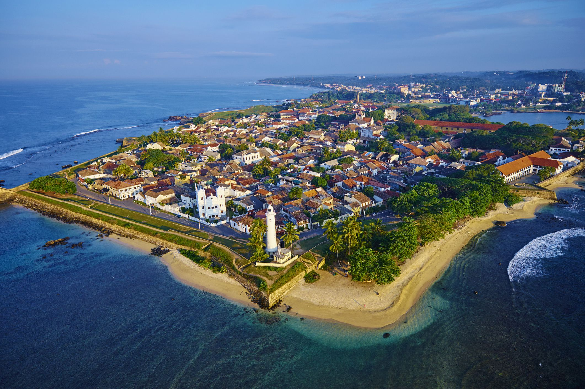

Galle
Galle is a jewel. A Unesco World Heritage Site, this historic city is a delight to explore on foot, an endlessly exotic old trading port blessed with imposing Dutch-colonial buildings, ancient mosques and churches, grand mansions and museums.
